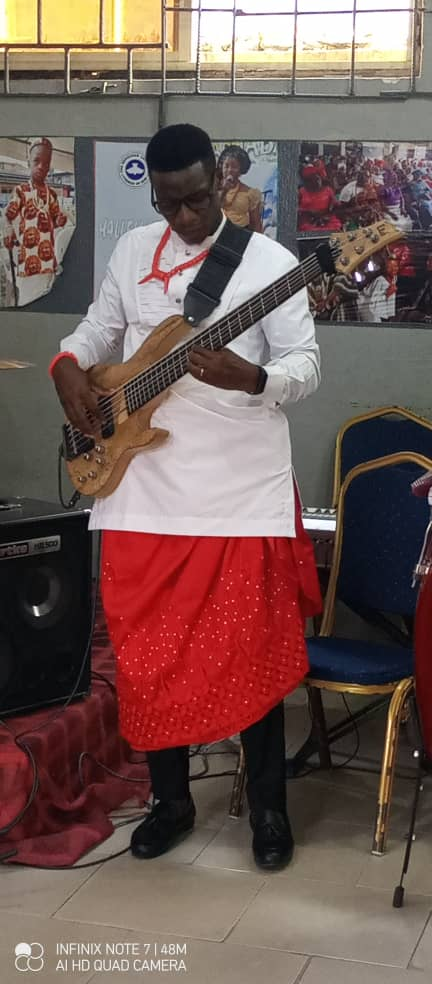

Babajide is a seasoned Real Estate and Facility Management professional with 13 years industry experience. His extensive experience spans across Real Estate Brokerage, Client Services, Real Estate Development, Cost Analysis and Facility Management. Babajide holds a BSc. (Hons) in Estate Management and an Advanced certification in Facility Management, both from the University of Lagos. He obtained a Post-Graduate Diploma from the University of Roehampton, United Kingdom and is also an Alumnus of Poise Graduate Finishing School, Nigeria. He is also a certified AWS Cloud Computing practitioner. He has served as Business Unit Head in some Real Estate Services and Development companies he worked for and now serves as the Managing Partner of the firm.
